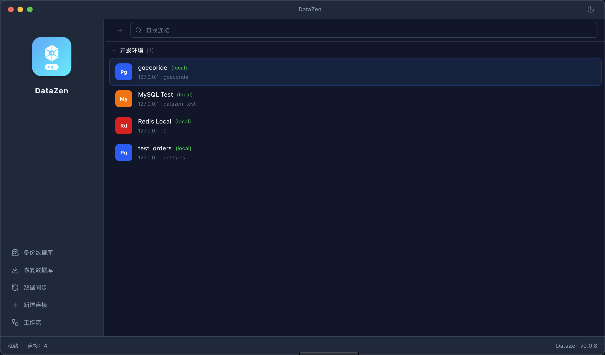

第一篇：一个现代桌面数据库工具是如何构建的
The first article is currently available in Chinese. It explains why DataZen combines Tauri, Rust and React, how Driver Command Runtime unifies queries, workflows and MCP, and how a SQL request travels through the system.